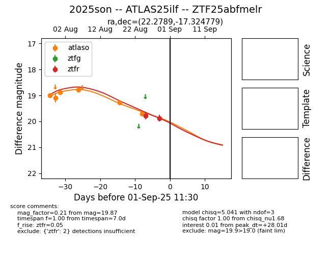

Target 2025son at 2025-08-26 13:00, see:
FINK: fink-portal.org/ZTF25abfmelr
Lasair: lasair-ztf.lsst.ac.uk/objects/ZTF25abfmelr
ALeRCE: alerce.online/object/ZTF25abfmelr
TNS: wis-tns.org/object/2025son
YSE: ziggy.ucolick.org/yse/transient_detail/2025son
alt names
ZTF25abfmelr (ztf,fink)
2025son (tns,yse)
ATLAS25ilf (atlas)
coordinates:
equatorial (ra, dec) = (22.2789,-17.32478)
galactic (l, b) = (166.4731,-76.89146)
photometry
last atlaso=19.70, ztfr=19.78
6 atlaso, 1 ztfr detections
